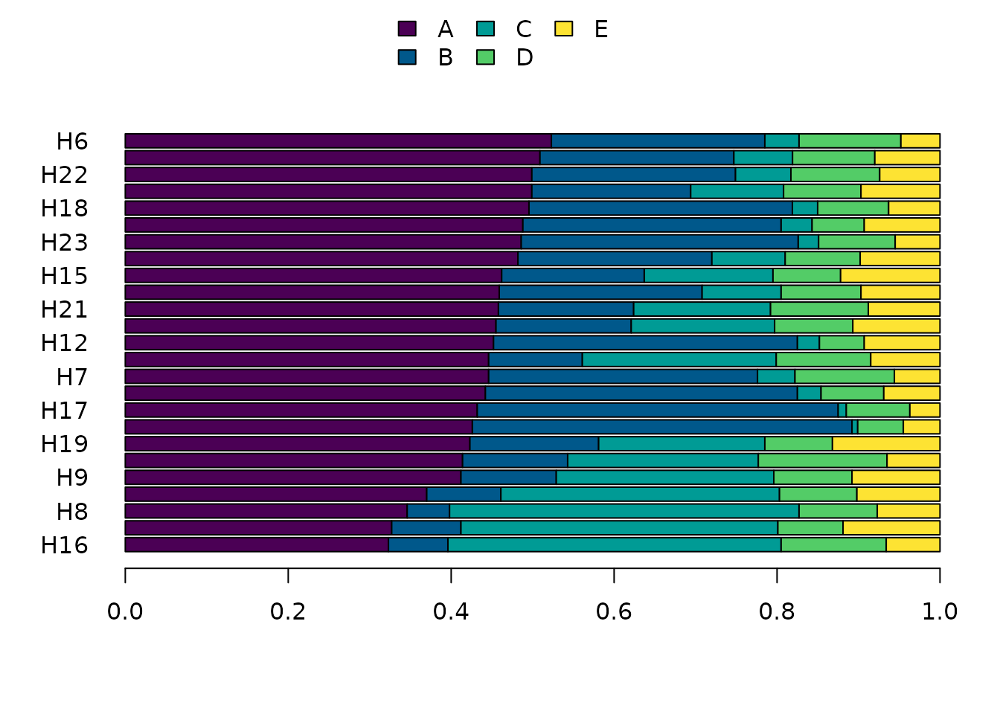
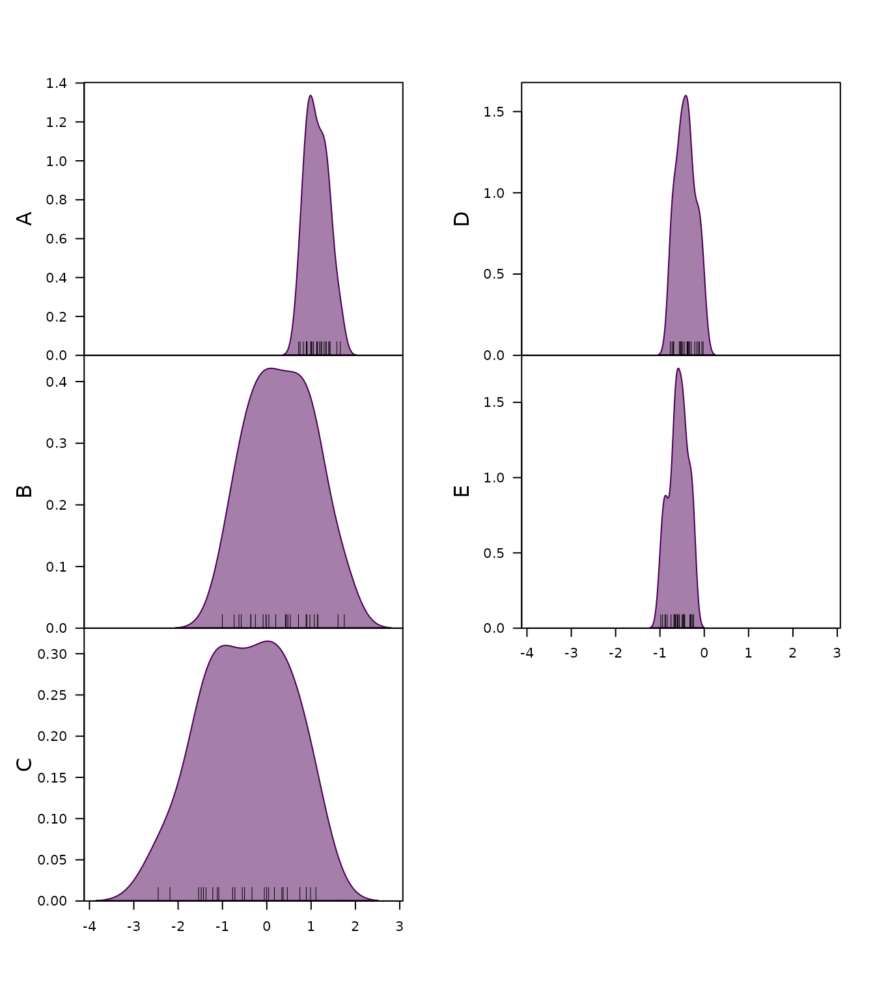
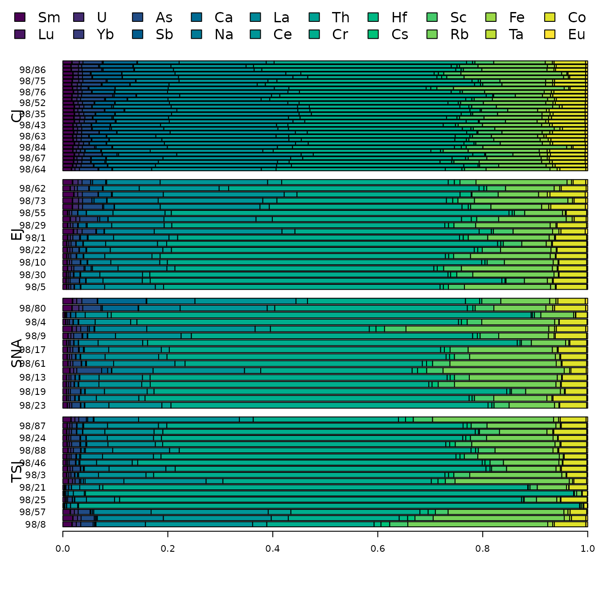
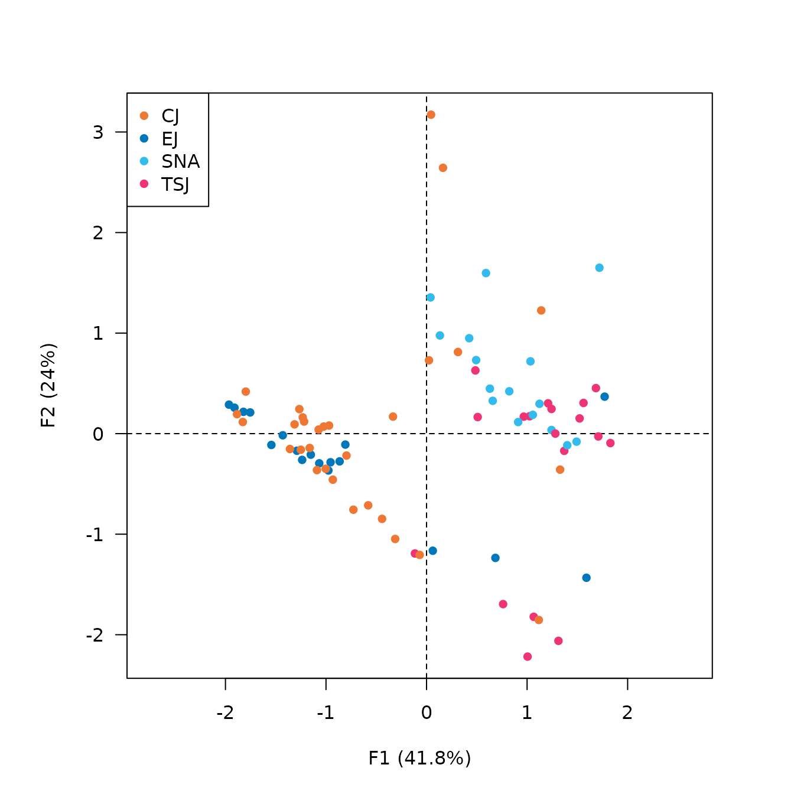

Provenance studies rely on the identification of probable sources, such that the variability between two sources is greater than the internal variability of a single source (the so-called provenance postulate; Weigand, Harbottle, and Sayre 1977). This assumes that a unique signature can be identified for each source on the basis of several criteria.
nexus is designed for chemical fingerprinting and source tracking of ancient materials. It provides provides tools for exploration and analysis of compositional data in the framework of Aitchison (1986).
Get started
## Install extra packages (if needed):
# install.packages("folio")
library(nexus)
#> Loading required package: dimensionexus provides a set of S4 classes that represent different special types of matrix. The most basic class represents a compositional data matrix, i.e. quantitative (positive) descriptions of the parts of some whole, carrying relative, rather than absolute, information (Aitchison 1986; Greenacre 2021).
It assumes that you keep your data tidy: each variable must be saved in its own column and each observation (sample) must be saved in its own row.
This class is of simple use as it inherits from base
matrix:
## Mineral compositions of rock specimens
## Data from Aitchison 1986
data("hongite")
head(hongite)
#> A B C D E
#> H1 48.8 31.7 3.8 6.4 9.3
#> H2 48.2 23.8 9.0 9.2 9.8
#> H3 37.0 9.1 34.2 9.5 10.2
#> H4 50.9 23.8 7.2 10.1 8.0
#> H5 44.2 38.3 2.9 7.7 6.9
#> H6 52.3 26.2 4.2 12.5 4.8
## Coerce to compositional data
coda <- as_composition(hongite)
head(coda)
#> <CompositionMatrix: 6 x 5>
#> A B C D E
#> H1 0.488 0.317 0.038 0.064 0.093
#> H2 0.482 0.238 0.090 0.092 0.098
#> H3 0.370 0.091 0.342 0.095 0.102
#> H4 0.509 0.238 0.072 0.101 0.080
#> H5 0.442 0.383 0.029 0.077 0.069
#> H6 0.523 0.262 0.042 0.125 0.048A CompositionMatrix represents a closed
composition matrix: each row of the matrix sum up to 1 (only relative
changes are relevant in compositional data analysis).
The original row sums are kept internally, so that the source data can be restored:
## Coerce to count data
counts <- as_amounts(coda)
all.equal(hongite, as.data.frame(counts))
#> [1] TRUE
## Ternary plots
plot(coda)
## Compositional bar plot
barplot(coda, order = "A")
Working with (reference) groups
Provenance studies typically rely on two approaches, which can be used together:
- Identification of groups among the artifacts being studied, based on mineralogical or geochemical criteria (clustering).
- Comparison with so-called reference groups, i.e. known geological sources or productive contexts (classification).
nexus allows to specify whether an observation
belongs to a specific group (or not). When coercing a
data.frame to a CompositionMatrix object, an
attempt is made to automatically detect groups by mapping column
names.
## Create a data.frame
X <- data.frame(
groups = c("A", "A", "B", "A", "B", "C", "C", "C", "B"),
Ca = c(7.72, 7.32, 3.11, 7.19, 7.41, 5, 4.18, 1, 4.51),
Fe = c(6.12, 5.88, 5.12, 6.18, 6.02, 7.14, 5.25, 5.28, 5.72),
Na = c(0.97, 1.59, 1.25, 0.86, 0.76, 0.51, 0.75, 0.52, 0.56)
)
## Coerce to a compositional matrix
Y <- as_composition(X)
any_assigned(Y)
#> [1] TRUEThis behavior can be disabled by setting
options(nexus.autodetect = FALSE) or overridden by
explicitly specifying the column to be used with the groups
argument of as_composition().
get_groups(x) and set_groups(x) <- value
allow to retrieve or set groups of an existing
CompositionMatrix (NA can be used to specify
that a sample does not belong to any group):
## Set groups (NA means no group)
set_groups(Y) <- c("X", "X", "Y", "X", "Y", NA, NA, NA, "Y")
## Retrieve groups
get_groups(Y)
#> [1] "X" "X" "Y" "X" "Y" NA NA NA "Y"Once groups have been defined, they can be used by further methods (e.g. plotting).
Working with repeated measurements
In some situations, measurements may have been repeated (e.g. multiple chemical analyses on the same sample). The presence of repeated measurements can be specified by giving several observations the same sample name.
When coercing a data.frame to a
CompositionMatrix object, an attempt is made to
automatically detect samples by mapping column names. If no matching
column is found, row names will be used by default.
## Create a data.frame
X <- data.frame(
samples = c("A", "A", "A", "B", "B", "B", "C", "C", "C"),
Ca = c(7.72, 7.32, 3.11, 7.19, 7.41, 5, 4.18, 1, 4.51),
Fe = c(6.12, 5.88, 5.12, 6.18, 6.02, 7.14, 5.25, 5.28, 5.72),
Na = c(0.97, 1.59, 1.25, 0.86, 0.76, 0.51, 0.75, 0.52, 0.56)
)
## Coerce to a compositional matrix
Y <- as_composition(X)
any_replicated(Y)
#> [1] TRUEThis behavior can be disabled by setting
options(nexus.autodetect = FALSE) or overridden by
explicitly specifying the column to be used with the
samples argument of as_composition().
get_samples(x) and
set_samples(x) <- value allow to retrieve or set sample
names of an existing CompositionMatrix (missing values are
not allowed):
## Set sample names
set_samples(Y) <- c("A", "B", "C", "D", "E", "F", "G", "H", "I")
## Retrieve groups
get_samples(Y)
#> [1] "A" "B" "C" "D" "E" "F" "G" "H" "I"Note that the presence of repeated measurements may affect some calculations (read the documentation carefully).
Log-ratio transformations
The package provides the following transformations: centered log ratio (CLR, Aitchison 1986), additive log ratio (ALR, Aitchison 1986), isometric log ratio (ILR, Egozcue et al. 2003) and pivot log-ratio (PLR, Hron et al. 2017).
## CLR
clr <- transform_clr(coda)
head(clr)
#> A B C D E
#> H1 1.3346582 0.9032446 -1.2180710 -0.69677410 -0.3230577
#> H2 1.1265880 0.4209146 -0.5515464 -0.52956753 -0.4663886
#> H3 0.8258984 -0.5767451 0.7472061 -0.53372770 -0.4626318
#> H4 1.2367416 0.4765643 -0.7190403 -0.38058588 -0.6136798
#> H5 1.2943994 1.1511245 -1.4296147 -0.45310510 -0.5628040
#> H6 1.4065594 0.7153224 -1.1153524 -0.02470833 -0.9818211
plot(clr)
back <- transform_inverse(clr)
head(back)
#> <CompositionMatrix: 6 x 5>
#> A B C D E
#> H1 0.488 0.317 0.038 0.064 0.093
#> H2 0.482 0.238 0.090 0.092 0.098
#> H3 0.370 0.091 0.342 0.095 0.102
#> H4 0.509 0.238 0.072 0.101 0.080
#> H5 0.442 0.383 0.029 0.077 0.069
#> H6 0.523 0.262 0.042 0.125 0.048Multivariate methods
## Data from Day et al. 2011
data("kommos", package = "folio")
## Remove rows with missing values
kommos <- remove_NA(kommos, margin = 1)
## Coerce to a compositional matrix
coda <- as_composition(kommos)
#> 2 qualitative variables were removed: type, date.
## Set groups
set_groups(coda) <- kommos$type
## Compositional bar plot
barplot(coda, order = "Ca")
Principle Component Analysis
## CLR
clr <- transform_clr(coda)
## PCA
library(dimensio)
clr_pca <- pca(clr, scale = FALSE)
viz_individuals(clr_pca, highlight = get_groups(coda), pch = 16,
col = c("#EE7733", "#0077BB", "#33BBEE", "#EE3377"))
viz_variables(clr_pca)
MANOVA
## ILR
ilr <- transform_ilr(coda)
## MANOVA
fit <- manova(ilr ~ get_groups(ilr))
summary(fit)
#> Df Pillai approx F num Df den Df Pr(>F)
#> get_groups(ilr) 3 1.7932 4.8487 57 186 < 2.2e-16 ***
#> Residuals 78
#> ---
#> Signif. codes: 0 '***' 0.001 '**' 0.01 '*' 0.05 '.' 0.1 ' ' 1The MANOVA results suggest that there are statistically significant differences between groups.
Discriminant Analysis
## LDA
discr <- MASS::lda(ilr, grouping = get_groups(ilr))
plot(discr)
## Back transform results
transform_inverse(discr$means, origin = ilr)
#> Sm Lu U Yb As Sb
#> CJ 0.014938709 0.0008558484 0.007253021 0.006793156 0.02199766 0.0014569243
#> EJ 0.018613143 0.0010139916 0.007584757 0.008127263 0.01819848 0.0012892835
#> SNA 0.007141080 0.0005084305 0.003701554 0.003950209 0.01127728 0.0009184591
#> TSJ 0.009835545 0.0006601008 0.005386968 0.005152492 0.01369280 0.0018069781
#> Ca Na La Ce Th Cr
#> CJ 0.029204741 0.0009599806 0.07678692 0.16797505 0.01897389 0.4392215
#> EJ 0.025610707 0.0018649908 0.09678585 0.21657222 0.02321610 0.3286455
#> SNA 0.007737157 0.0012335187 0.03893221 0.08823033 0.01467079 0.6248961
#> TSJ 0.008745270 0.0013825884 0.05646163 0.11939198 0.01937137 0.4647827
#> Hf Cs Sc Rb Fe Ta
#> CJ 0.011779918 0.004874522 0.03227958 0.10114053 0.010336253 0.003030762
#> EJ 0.017996210 0.004785199 0.04344994 0.10870167 0.013130417 0.004482816
#> SNA 0.005908416 0.004618774 0.03019832 0.09111503 0.008644199 0.001635972
#> TSJ 0.008497490 0.011135602 0.03551225 0.17345781 0.010099512 0.002099366
#> Co Eu
#> CJ 0.04679035 0.003350694
#> EJ 0.05566413 0.004267303
#> SNA 0.05301923 0.001662958
#> TSJ 0.05036299 0.002164612References
Aitchison, J. (1986). The Statistical Analysis of Compositional Data. Monographs on Statistics and Applied Probability. Londres, UK ; New York, USA: Chapman and Hall.
Egozcue, J. J., Pawlowsky-Glahn, V., Mateu-Figueras, G. and Barceló-Vidal, C. (2003). Isometric Logratio Transformations for Compositional Data Analysis. Mathematical Geology, 35(3): 279-300. DOI: 10.1023/A:1023818214614.
Greenacre, M. (2021). Compositional Data Analysis. Annual Review of Statistics and Its Application, 8(1): 271-299. DOI: 10.1146/annurev-statistics-042720-124436.
Hron, K., Filzmoser, P., de Caritat, P., Fišerová, E. and Gardlo, A. (2017). Weighted Pivot Coordinates for Compositional Data and Their Application to Geochemical Mapping. Mathematical Geosciences, 49(6): 797-814. DOI : 10.1007/s11004-017-9684-z.
Weigand, P. C., Harbottle, G. and Sayre, E. (1977). Turquoise Sources and Source Analysisis: Mesoamerica and the Southwestern U.S.A. In J. Ericson & T. K. Earle (Eds.), Exchange Systems in Prehistory, 15-34. New York, NY: Academic Press.